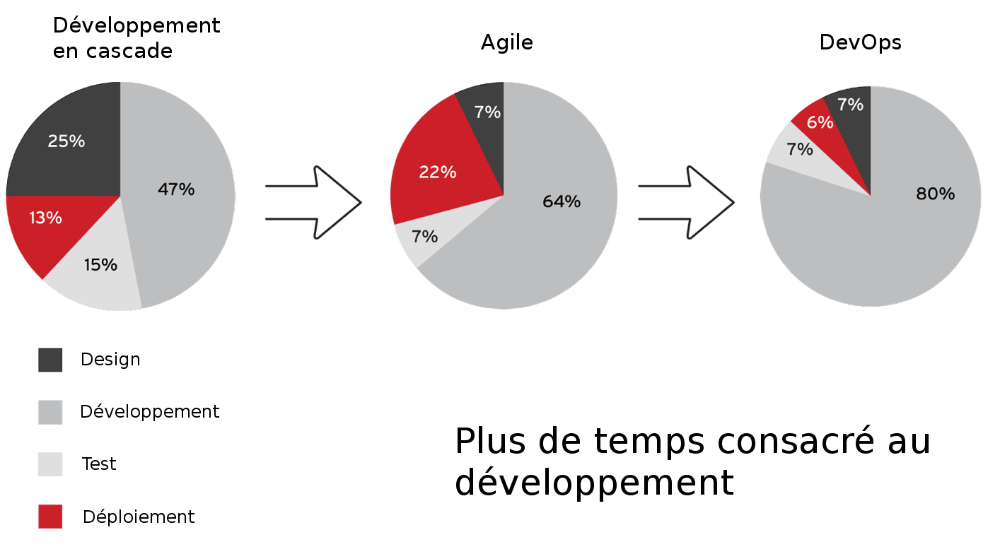
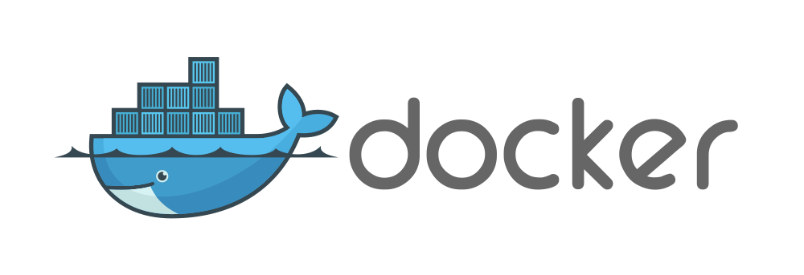
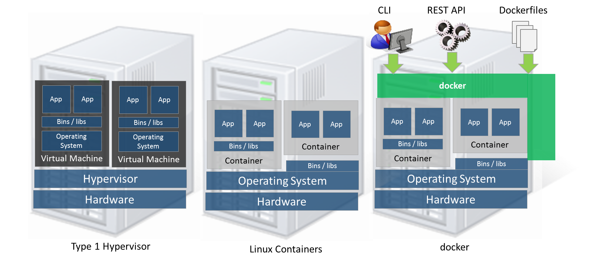

Architecture Microservices avec Docker

Présentation de @CattGr est mise à disposition selon les termes de la licence Creative Commons Attribution 4.0 International
En 45 minutes ...
- Le constat.
- Petit rappel sur Docker.
- Les Microservices, c'est quoi ?
- Pourquoi migrer vers les Microservices ?
- Quels outils pour orchestrer ceci ?
Plus rapide et de meilleur qualité
Petit rappel sur 
Hyperviseur vs Docker
Docker Moteur/Client

The Twelve Factors
La popularité de Docker vient en partie de sa compatibilité avec les règles 12 Factors.
|
|
Codebase
- Tout code doit être géré par un logiciel de suivi de version (git, mercurial, ...).
- Une application = code source
Dependencies
- Toutes les dépendances doivent être clairement précisées.
- Le système cible n'est pas censé contenir de programme pré-installé.
- Pas de dépendances implicites.
Config
- Est considéré comme configuration, tout ce qui diffère d'un environnement à l'autre (dev, qualif, prod, autre site).
- Tout élément de configuration doit être passé par des variables d'environnement.
- Il ne doit y avoir absolument aucune référence à la configuration dans le code.
Backing Services
- Un backing service est une ressource externe au conteneur (base mysql, smtp, activemq, memcache, ...).
- L'accès à ces ressources doit être passé en paramètre.
- Pas de distinction entre les services locaux et distants.
Build, release, run
- On recrée l'application et l'environnement avant tout déploiement d'une nouvelle version.
- Aucune modification n'est apportée sur l'application déployée.
- Chaque version déployée a un numéro de version unique (timestamp, numero de commit, ...).
Processes
- L'application est exécutée dans l'environnement d'exécution en tant qu'un ou plusieurs processus.
- Toutes les données doivent être stockées dans une ressource externe (base de données).
- Les variables de sessions utilisateurs ne doivent jamais être stockées localement.
Port binding
- L'application fournit un service qui écoute sur un port.
Concurrency
- Chaque application peut être mise à l'echelle. Les conteneurs peuvent être lancés x fois pour répartir la charge.
- Le programme dans le conteneur ne doit pas être lancé en tâche de fond.
- L'arrêt du programme entraîne l'arrêt du conteneur.
Disposability
- Le conteneur doit être jetable.
- Il doit donc pouvoir être lancé très rapidement.
- Un arrêt intempestif ne doit pas compromettre les données.
Dev/prod parity
- Le développeur doit pouvoir déployer rapidement le code qu'il vient de finir d'écrire.
- Le développeur doit être plus proche du déploiement (DevOps).
- Maintenir le développement et la production aussi semblables que possible en utilisant les mêmes outils.
- Éviter de prendre des backends différents en prod et en dev (ex: base de données, ...) pour limiter les surprises en production.
Logs
- Les applications doivent externaliser leurs journaux pour la visualisation et l'archivage à long terme (ELK, Spunk, rsyslog ...).
- Les journaux peuvent s'afficher dans la sortie standard de l'application, mais pas dans un fichier du conteneur.
Admin process
- Les commandes d'administration doivent s'exécuter dans un environnement identique aux autres processus d'exploitation.
- Même conteneur, mêmes variables d'environnement, mais en mode interactif.